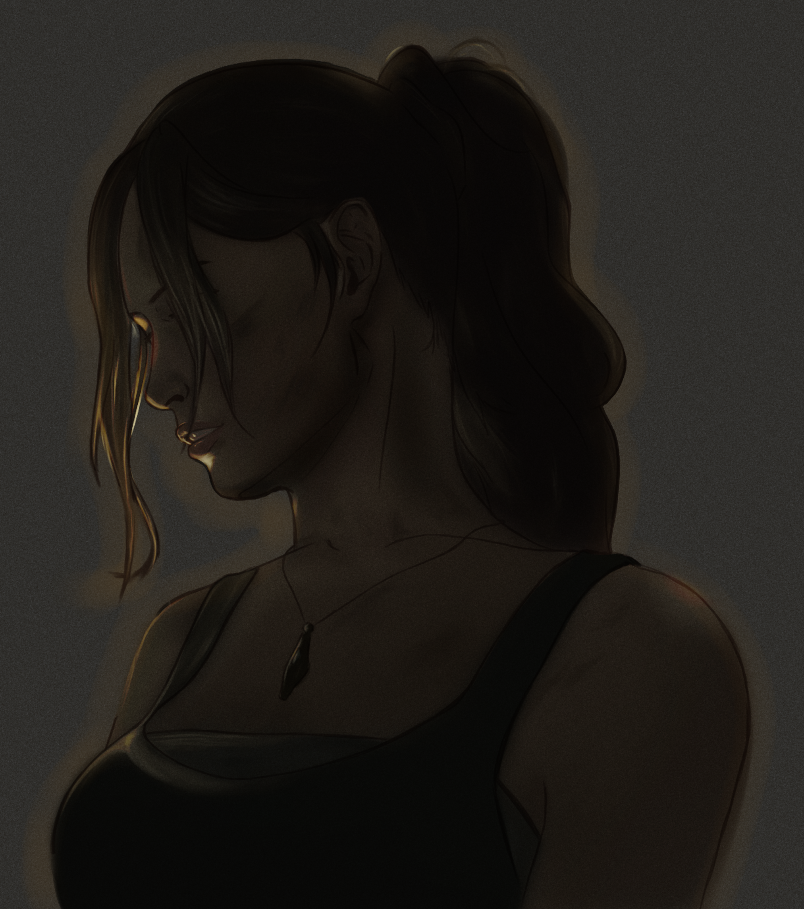
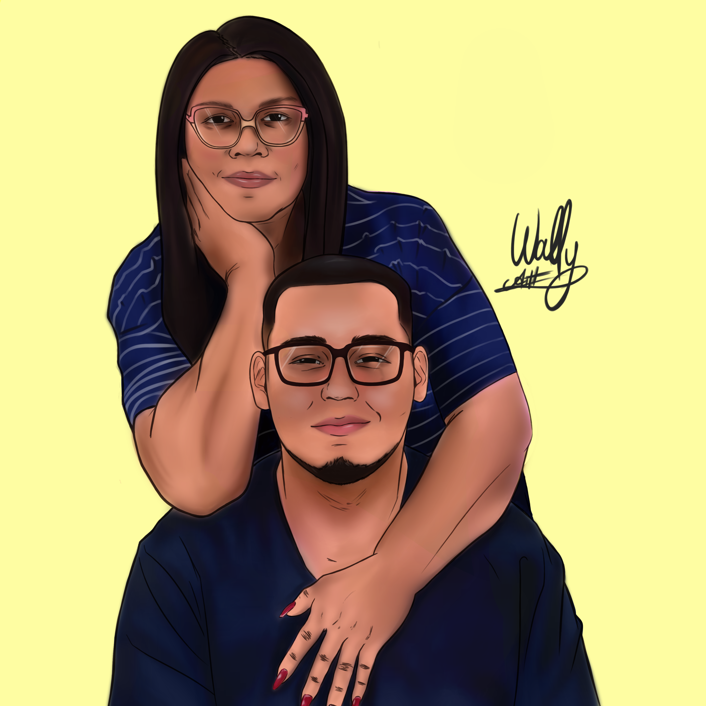
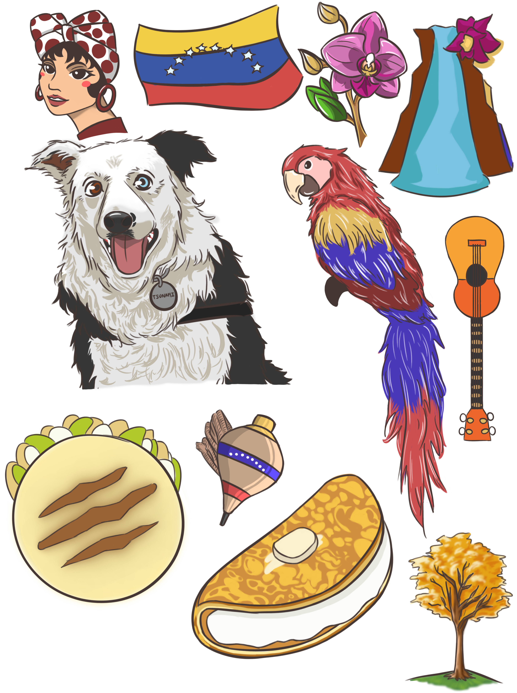
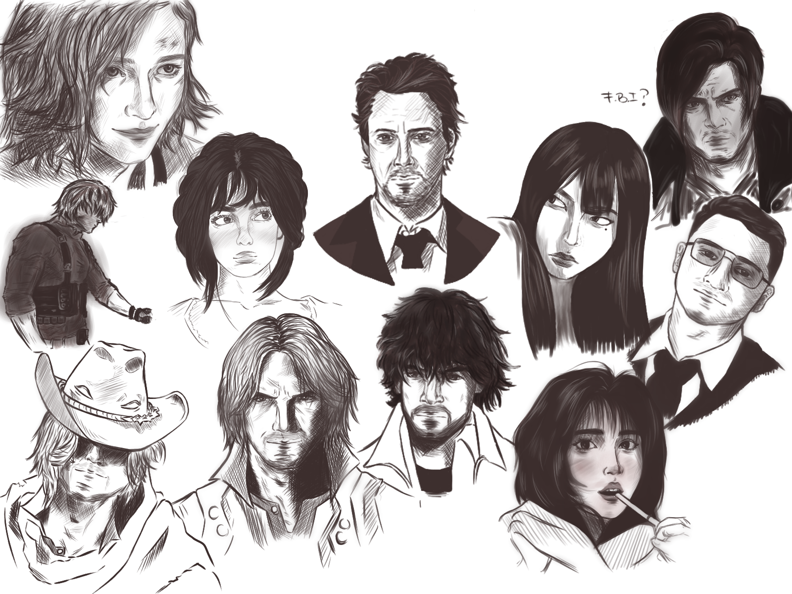
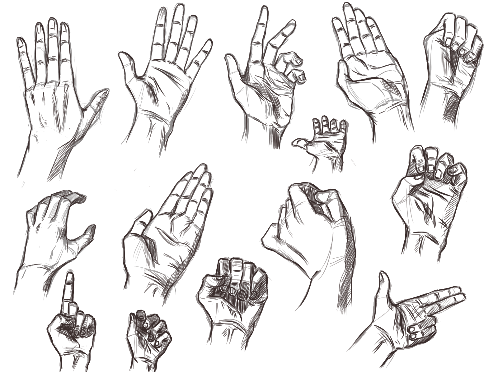
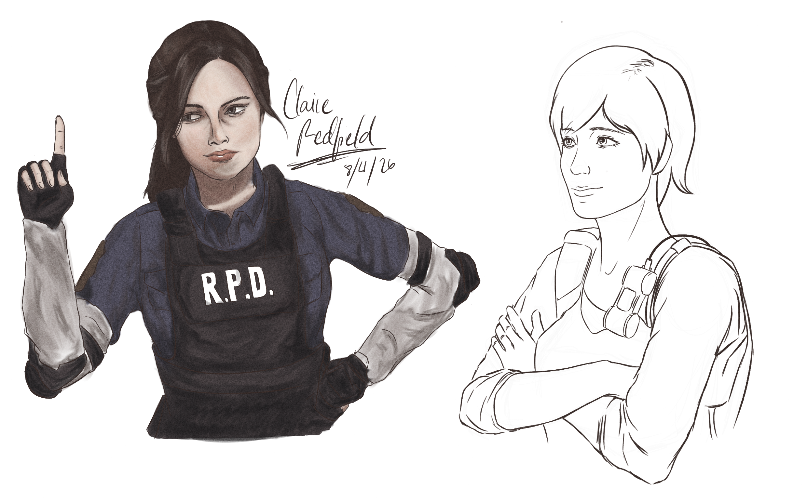

Exploración de la creatividad a través del dibujo, la sensibilidad visual, estudios de rostros y manos, y colaboraciones en productos físicos memorables.
El dibujo a mano libre y digital me ha enseñado a observar las proporciones, la armonía y la paciencia. Estudiar expresiones en rostros, la complejidad de las manos y personajes como Claire Redfield entrena la vista para apreciar el equilibrio visual, algo que luego traslado al diseño web.
Mi participación en el diseño y creación para este negocio de detalles florales y regalos me permitió entender cómo los elementos visuales físicos y los stickers personalizados generan emociones reales en las personas, conectando la estética con el detalle humano.

Mi primera ilustración digital - Un retrato de Claire Redfield
Mi segunda ilustracion digitial - El primer dibujo en colaboracion con Cursi Detalles para el dia de las madres
Diseño de stickers y elementos culturales como segunda colaboracion con Cursi Detalles
Prácticas y estudios de expresiones y rostros
Prácticas de anatomía y manos
Bocetos e ilustraciones conceptuales de Resident Evil